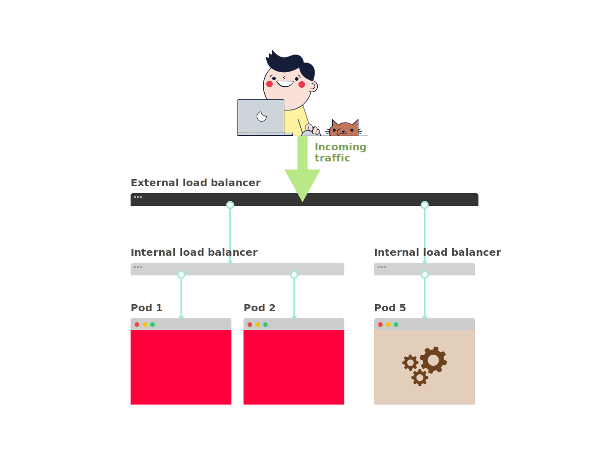
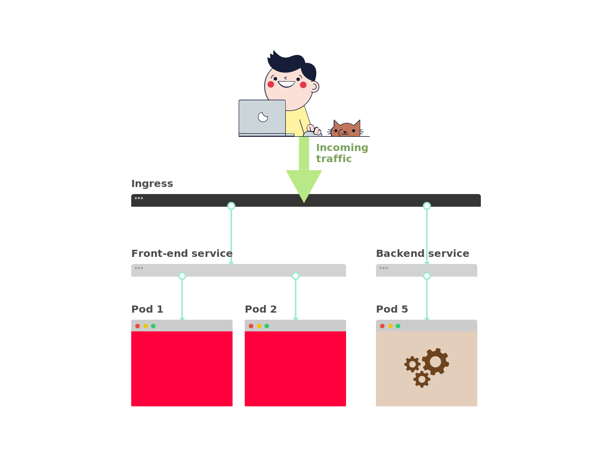
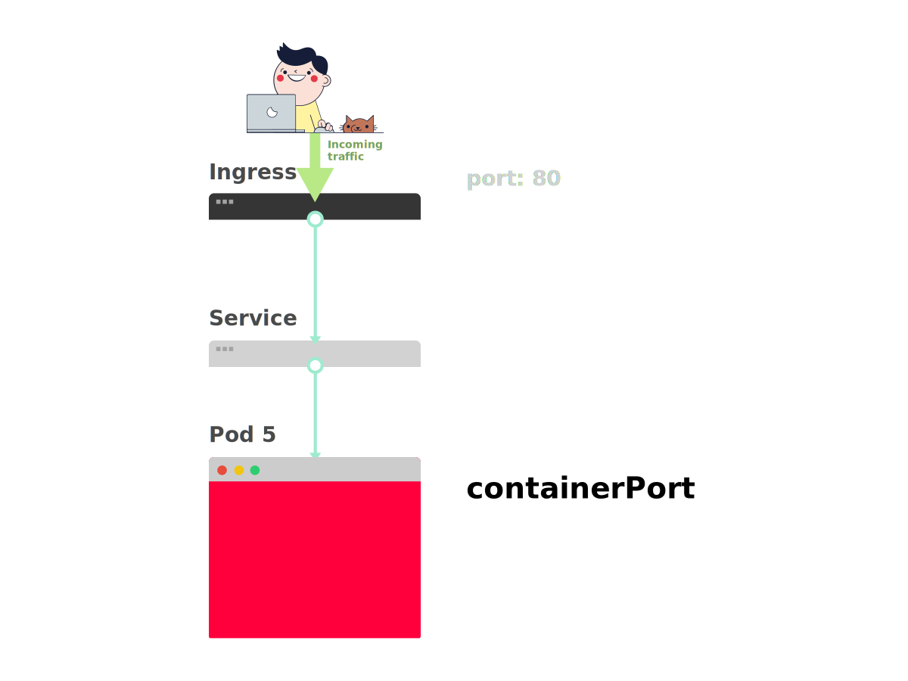
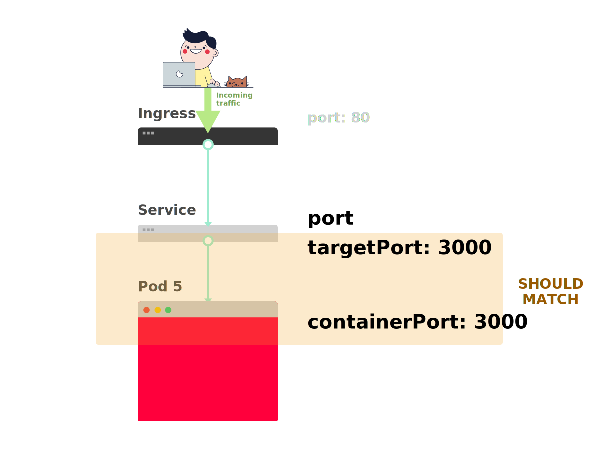
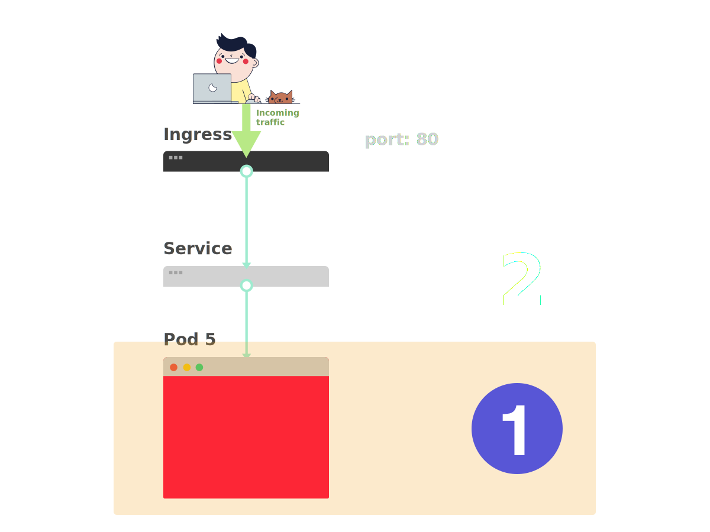
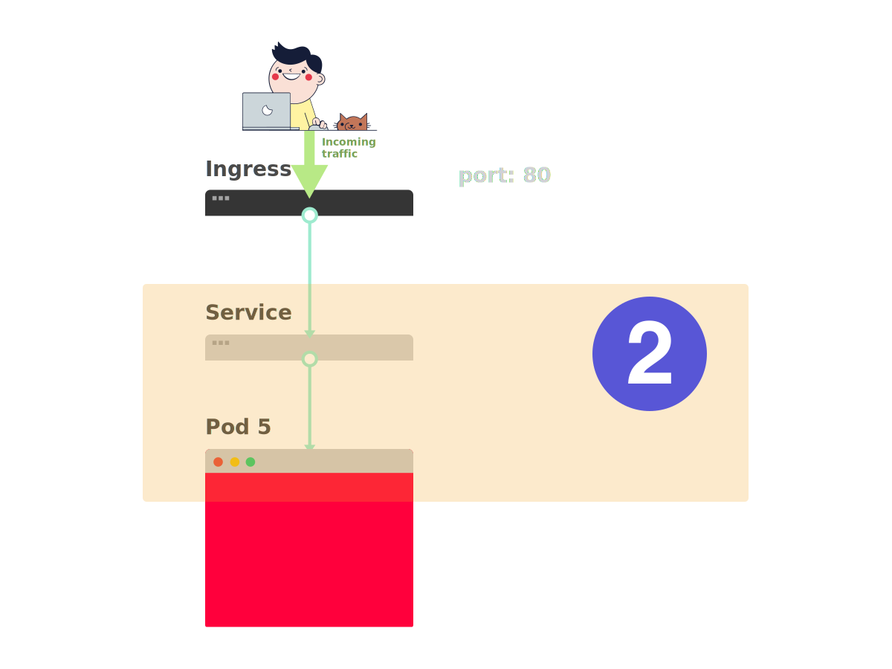
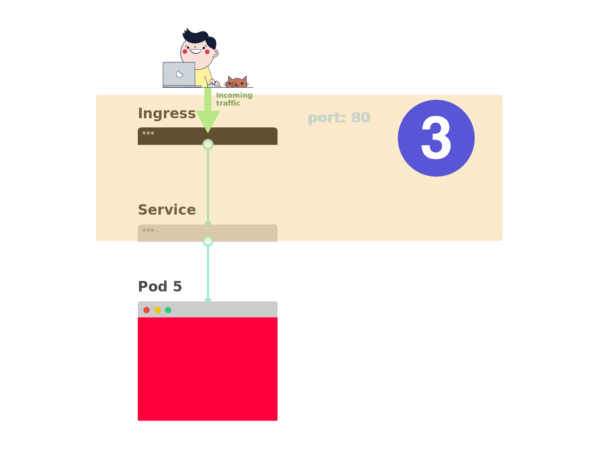

原文地址：https://learnk8s.io/troubleshooting-deployments，译文中对部分目录级别进行了调整。
部署概念
这儿有张图，可帮助调试 Kubernetes 的部署问题。（PDF 版本下载）

当一个应用要部署到 Kubernetes 中时，通常会定义三个组件：
- Deployment —— 部署，用于创建的应用程序副本（名为 Pod）的模版
- Service —— 服务，内部负载均衡，用于将流量路由至 Pod
- Ingress —— 入口，用于描述集群外的流量如何流到服务
下面是快速回顾。
- 在 Kubernetes 中，应用通过两层负载均衡暴露至集群外：内部和外部。

- 内部负载均衡名为 Service，外部的名为 Ingress。

- Pod 并非直接部署的，而是由 Deployment 创建并监控。

假如现在需要部署一个简单的 Hello World 应用，其部署 YAML 文件类似如下：
1 | apiVersion: apps/v1 |
这个定义有点长，很容易忽略组件之间的相互关系。
例如：
- 什么时候需要用 80 端口，什么时候用 8080 端口？
- 是否需要为每个服务都创建一个新的端口，以防止它们冲突？
- 标签名重要吗？是否需要在任何地方都相同？
在进行调试之前，先回顾一下这三个组件如何相互链接。
先从部署和服务开始。
连接部署和服务
令人惊讶的是，服务和部署根本没有连接。相反，服务直接指向 Pod，完全跳过了部署。
因此，Pod 和服务之间的关系更需要注意。需要注意这三点：
- 服务的选择器应该匹配 Pod 的至少一个标签
- 服务的
targetPort应该匹配 Pod 内容器的containerPort - 服务的
port可以是任意数字。多个服务可以使用相同的端口，因为它们分配了不同的 IP 地址
下图展示了如何连接端口：
- 假如想将下面的 Pod 通过服务暴漏出去。
- 创建 Pod 时，需要定义各个容器的
containerPort。

- 创建服务时，需要定义
port和targetPort。但是 哪一个需要与容器相连？
targetPort应该与containerPort匹配。

- 如果容器暴露了端口 3000，那么
targetPort应该也是 3000，与它相匹配。

查看 YAML 时，可以看到标签 any-name 和 port/targetPort 是匹配的：
1 | apiVersion: apps/v1 |
部署上面的 track: canary 标签呢？它也需要匹配吗？
该标签属于部署，服务的选择器不使用它来路由流量。
也就是说，可以删掉它或者给它取别的值。
matchLabels 选择器呢？
它必须匹配 Pod 的标签，部署通过它来跟踪 Pod。
如果已经做了正确的修改，要如何测试？
可以用以下命令检查 Pod 是否有正确的标签：
1 | kubectl get pods --show-labels |
如果有很多属于不同应用的 Pod：
1 | kubectl get pods --selector any-name=my-app --show-labels |
其中 any-name=my-app 就是标签 any-name: my-app。
还有问题吗？
还可以直接连到 Pod！
可以使用 kubectl 的 port-forward 命令来连到服务并测试连接。
1 | kubectl port-forward service/<service name> 3000:80 |
其中：
service/<service name>是服务的名字 —— 在本例 YAML 中为my-service- 3000 是在本机上监听的端口
- 80 是服务在
port字段中暴露出来的端口
如果可以连接，那么设置就是正确的。
如果不能，那么很可能是标签放错了位置或者端口不匹配。
连接服务和入口
将应用暴露出去的下一步是配置入口。
入口必须知道如何检索服务然后检索 Pod 并将流量路由给它们。
入口通过名字和暴露的端口检索正确的服务。
入口和服务的以下两项需要匹配：
- 入口的
servicePort需要匹配服务的port - 入口的
serviceName需要匹配服务的name
下图展示了如何连接端口：
- 从前面已经知道，服务暴漏了一个
port。

- 入口有一个名为
servicePort的字段。

- 服务的
port应该总是与入口的servicePort匹配。

- 如果为该服务分配了 80 端口，那么
servicePort也需要设置为 80。

参考以下内容：
1 | apiVersion: v1 |
如何测试入口是否正常工作？
可以像之前一样使用 kubectl port-forward，不过不再是连接到服务，而是连到入口控制器。
首先，检索入口控制器的 Pod 名字：
1 | $ kubectl get pods --all-namespaces |
找到入口 Pod（可能在不同的命名空间中），然后用 describe 命令检索端口：
1 | $ kubectl describe pod nginx-ingress-controller-6fc5bcc \ |
最后，连接 Pod：
1 | kubectl port-forward nginx-ingress-controller-6fc5bcc 3000:80 --namespace kube-system |
现在，每次访问本机的 3000 端口，请求都会被转发至入口控制器 Pod 的 80 端口。
如果访问 http://localhost:3000，可以发现该应用展示了一个网页。
端口回顾
现在来回顾一下哪些端口和标签需要匹配：
- 服务的选择器需要匹配 Pod 的标签
- 服务的
targetPort需要匹配 Pod 内容器的containerPort - 服务的端口可以是任何数字。多个服务可以使用相同的端口，因为它们会被分配不同的 IP
- 入口的
servicePort需要匹配服务的port - 服务的名字需要匹配入口的
serviceName字段
本文的唯一作用就是了解如何构造 YAML 定义。
有些东西填错了会发生什么事？
也许 Pod 启动不了，也许会崩溃。
3 步排除 Kubernetes 部署故障
在深入调试有问题的部署之前，必须对 Kubernetes 的工作方式有一个明确定义的模型认知。
由于每个部署都有三个组件，最好按顺序调试它们，先从更底层开始。
- 先要确定 Pod 是否已经准备好，并正在运行

- 如果 Pod 已经就绪，接着检查服务能否将流量导向 Pod

- 最后，检查服务和入口的连接是否正常

排除 Pod 故障
大多数情况下，问题都出在 Pod 自身上。
必须确认 Pod 已经 就绪 并且 正在运行 。
如何检查呢？
1 | $ kubectl get pods |
上面这种情况下，最后一个 Pod 是就绪并且正在运行的 —— 但是前面两个既没在 运行 ，也没 就绪 。
如何检查到底哪儿出了问题？
有四个很有用的命令帮助排查 Pod 的问题：
kubectl logs <pod name>用于查看 Pod 内容器的日志kubectl describe pod <pod name>用于查看 Pod 相关的事件列表kubectl get pod <pod name>用于查看 Kubernetes 保存的 Pod 的 YAML 定义kubectl exec -ti <pod name> bash用于在 Pod 的某个容器中运行交互式的命令
那该用哪个？
没有万能的。必须组合使用这几种命令。
常见 Pod 错误
Pod 有启动错误和运行错误。
启动错误包括：
- ImagePullBackoff
- ImageInspectError
- ErrImagePull
- ErrImageNeverPull
- RegistryUnavailable
- InvalidImageName
运行错误包括：
- CrashLoopBackOff
- RunContainerError
- KillContainerError
- VerifyNonRootError
- RunInitContainerError
- CreatePodSandboxError
- ConfigPodSandboxError
- KillPodSandboxError
- SetupNetworkError
- TeardownNetworkError
有些错误比其他的更常见。
下面是一系列更常见的错误，以及其修复方式。
ImagePullBackOff
该错误发生在 Kubernetes 无法拉取 Pod 的某个容器的镜像时。
有三种常见的情况：
- 镜像名无效 —— 例如，名字拼错了，或者镜像不存在
- 指定了一个不存在的镜像标签
- 尝试拉取的镜像属于某个私库，而 Kubernetes 没有对应的访问凭证
前两种情况可以通过修正镜像的名字或者标签来解决。
最后一种情况，需要将私库的凭证添加到 Secret 并在 Pod 中引用它。
CrashLoopBackOff
如果容器无法启动，Kubernetes 将会在 Pod 状态那显示 CrashLoopBackOff 错误信息。
一般来说，当以下情况发生时，容器无法启动：
- 应用发生了错误，阻止容器启动
- 容器配置有问题
- 探活失败多次
可以通过查看容器日志来检查失败原因。
如果因为容器太快重启导致无法查看日志，可以尝试下列命令：
1 | kubectl logs <pod-name> --previous |
这将输出上一个容器的日志。
RunContainerError
该错误发生于容器无法启动时。
这比容器中的应用启动还早。
该问题通常是因为配置错误，如：
- 挂载了不存在的卷，如 ConfigMap 或 Secrets
- 将只读的卷挂载为读写模式
可以用 kubectl describe pod <pod-name> 来收集并分析错误信息。
Pod 状态为 待定
创建 Pod 后，它的状态一直是 待定 。
为何？
如果调度器组件运行正常，那么可能的原因是：
- 集群没有足够的资源如 CPU 或内存来运行该 Pod
- 当前命名空间设置了资源配额，并且创建该 Pod 会导致资源超限
- 该 Pod 绑定到一个 待定 的持久卷声明
此时最好检查一下 kubectl describe 命令的 事件 部分：
1 | kubectl describe pod <pod name> |
对于由于资源配额而造成的错误，可以使用以下方法检查集群的日志：
1 | kubectl get events --sort-by=.metadata.creationTimestamp |
Pod 为非 就绪 状态
如果 Pod 正在运行，但并未 就绪 ，这意味着就绪探测失败了。
当就绪探测失败了，Pod 就无法挂接到服务，也就没有流量会被路由到这个实例了。
失败的就绪探测是应用范畴的错误，需要通过 kubectl describe 的 事件 部分来定位问题。
排除服务故障
如果 Pod 已经 运行 并且 就绪 ，但仍然无法收到应用的回复，那么需要检查下服务是否配置正确。
服务设计为基于标签将流量路由到 Pod。
因此首先需要检查该服务指向了多少 Pod。
可以通过如下命令检查服务的端点：
1 | kubectl describe service <service-name> | grep Endpoints |
端点是 <ip address:port> 对，当服务指向（至少一个）Pod时，上述输出应该至少会有一个端点。
如果“端点”部分是空的，可能有以下两种可能：
- 并没有带有正确标签的 Pod 在运行（提示：可以检查下命名空间是否正确）
- 服务的
selector标签拼写错了
如果看到端点列表，但仍然无法访问应用，那么服务的 targetPort 就有可能有问题。
如何测试服务？
无论服务的类型是什么，都可以用 kubectl port-forward 来连接它：
1 | kubectl port-forward service/<service-name> 3000:80 |
其中：
<service-name>是服务名3000是本机上希望打开的端口80是服务暴露的端口
排除入口故障
如果已经看到这部分了，那么：
- Pod 正在 运行 并且已经 就绪
- 服务可以正常分发流量到 Pod
但仍然无法看到应用的回复。
这意味着，最有可能的就是入口的配置有问题。
由于集群所用的入口控制器一般都是第三方组件，对于不同的入口控制器有不同的调试方式。
但是在深入研究入口控制器特定工具之前，可以检查一些简单内容。
入口使用 serviceName 和 servicePort 来连接到服务。
通过如下命令检查这些是否配置正确：
1 | kubectl describe ingress <ingress-name> |
如果 后端 列是空的，那么配置中肯定出错了。
如果在 后端 列中可以看到端点，但仍然无法访问应用，问题可能出在：
- 入口是如何暴露到公网的
- 集群是如何暴露到公网的
可以通过直接连接到入口的 Pod 来隔离基础设施问题和入口问题。
首先，查看入口控制器的 Pod（可能在不同的命名空间）：
1 | $ kubectl get pods --all-namespaces |
用 describe 查看其端口：
1 | kubectl describe pod nginx-ingress-controller-6fc5bcc --namespace kube-system | grep Ports |
最后，连接到 Pod：
1 | kubectl port-forward nginx-ingress-controller-6fc5bcc 3000:80 --namespace kube-system |
现在，每次访问本机的 3000 端口，请求都会转发到 Pod 的 80 端口。
现在正常了吗？
- 如果正常了，那么问题就在基础设施那。需要调查流量是如何路由到集群的。
- 如果还是不正常，那么问题就在入口控制器。需要调试入口了。
如果还是无法让入口控制器正常工作，那就需要调试它了。
入口控制器有多种不同的版本。
比较流行的版本有：Nginx、HAProxy、Traefik 等等。
需要查阅入口控制器的文档去寻找故障排除指南。
Ingress Nginx 是最流行的入口控制器，下一节中包含了一些技巧。
调试 Ingress Nginx
Ingress-Nginx 项目有一个 Kubectl 的官方插件。
可以使用 kubectl ingress-nginx 来：
- 查看日志、后端、证书等等
- 连接到入口
- 检查当前配置
以下三个命令可以尝试：
kubectl ingress-nginx lint检查 nginx.conf 配置kubectl ingress-nginx backend查看后端（相当于kubectl describe ingress <ingress-name>）kubectl ingress-nginx logs查看日志
请注意可能需要用
--namespace <name>来指定入口控制器的命名空间
总结
如果不知道从哪里开始，在 Kubernetes 中进行故障排除可能是一项艰巨的任务。
始终记住，应该从下至上解决问题：从 Pod 开始，然后从 Service 到 Ingress 向上检查。
本文中的调试技术同样可以应用于其他对象，例如：
- 失败的 Jobs 和 CronJobs
- StatefulSets 和 DaemonSets
非常感谢 Gergely Risko，Daniel Weibel 和 Charles Christyraj 提供了一些宝贵的建议。